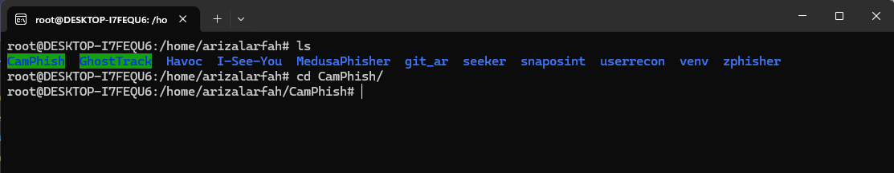
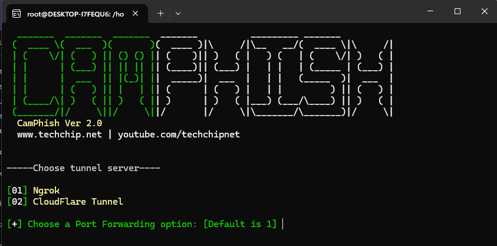
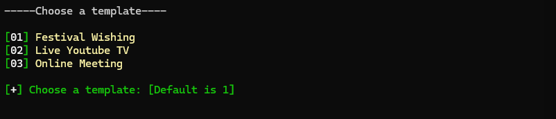
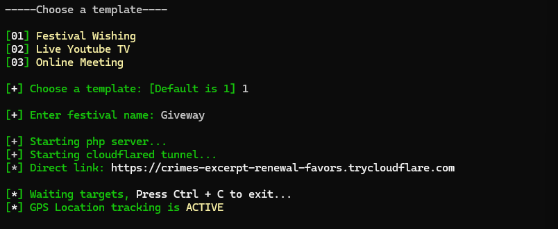
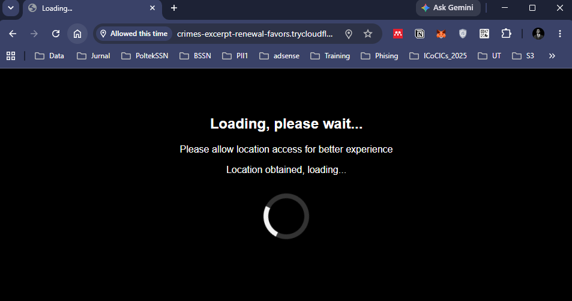
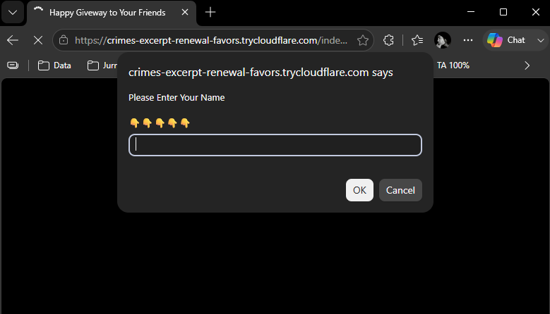
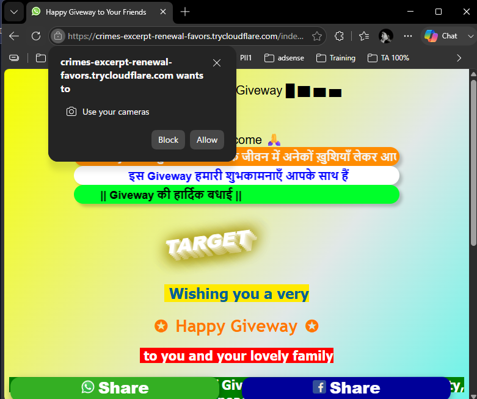
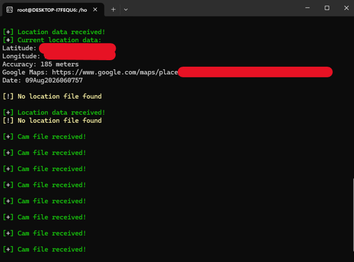
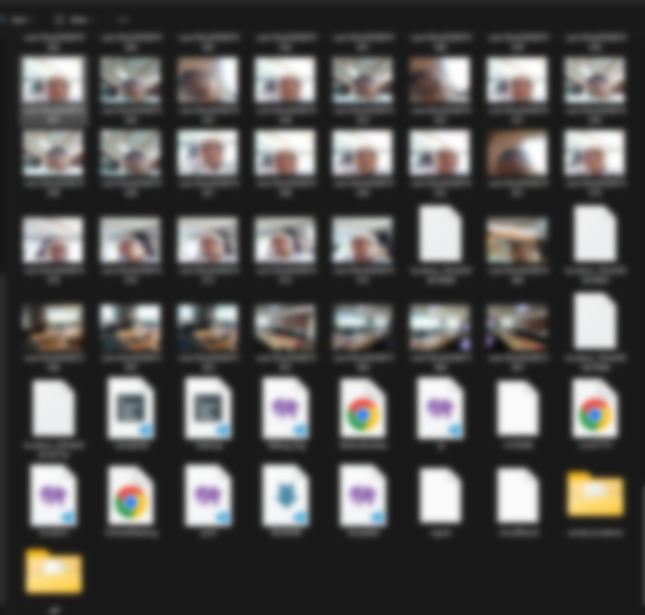

📷 CamPhish — Workflow Security Awareness
CamPhish menipu target agar meng-klik "Allow" pada permintaan kamera/lokasi browser lewat halaman kedok (festival, live TV, online meeting). Ini adalah social engineering yang mengambil data pribadi nyata (wajah & lokasi presisi) dari orang yang tidak sadar sedang diuji.
- Hanya untuk demo security-awareness ke diri sendiri, siswa/peserta yang sudah diberi konteks & persetujuan, atau engagement pentest berizin tertulis.
- Jangan sebarkan link ke orang yang tidak tahu ini adalah simulasi/demo.
- Hapus semua data yang terkumpul (foto, lokasi) setelah sesi demo selesai — lihat
bash cleanup.shdi bagian Instalasi.
Overview
CamPhish menghosting halaman web palsu (mis. "Festival Wishing") dan mengeksposnya lewat tunnel publik (ngrok/CloudFlare Tunnel). Saat target membuka link dan menekan Allow pada prompt lokasi & kamera browser, tool menangkap koordinat GPS dan satu snapshot dari kamera target, lalu menyimpannya di server penyerang.
Instalasi
Sesuai README resmi techchipnet/CamPhish (mendukung Kali Linux, Termux, Ubuntu, Parrot OS, macOS, dan Windows/WSL):
# dependency apt-get -y install php wget unzip # clone & masuk folder git clone https://github.com/techchipnet/CamPhish cd CamPhish # jalankan bash camphish.sh # bersihkan log & data hasil capture setelah selesai bash cleanup.sh

cd CamPhish/ — folder tool ini berdampingan dengan tool security-testing lain di environment yang sama.
Penggunaan
1. Jalankan & pilih tunnel
Jalankan bash camphish.sh, lalu pilih server tunnel — pada workflow ini dipilih [2] CloudFlare Tunnel (tidak perlu akun/token, berbeda dengan Ngrok).

Banner CamPhish v2.0 dan pilihan tunnel server.
2. Pilih template halaman kedok
Tersedia 3 template: [1] Festival Wishing, [2] Live YouTube TV, [3] Online Meeting (beta). Workflow ini memakai template Festival Wishing.

Pilihan template halaman kedok.
3. Isi nama & ambil link
Masukkan nama bebas untuk halaman festival (mis. "Giveway"), tool otomatis menjalankan PHP server + CloudFlare tunnel dan mencetak link publik yang tinggal dibagikan ke target.

Direct link ter-generate (domain trycloudflare.com sekali pakai, mati begitu proses dihentikan) dan status GPS Location tracking is ACTIVE.
4. Sisi target: buka link
Begitu target membuka link, browser menampilkan halaman "Loading..." sambil meminta izin lokasi.

Tampilan di sisi target: permintaan izin lokasi sebelum halaman "asli" ditampilkan.
Beberapa template (mis. Festival Wishing) juga menampilkan prompt input nama sebagai bagian dari personalisasi halaman kedok.

Prompt "Please Enter Your Name" — hasil isian dipakai untuk mempersonalisasi halaman ucapan festival.
Setelah halaman ucapan tampil, target diminta mengizinkan akses kamera:

Klik "Allow" di sini berarti target memberikan akses kamera ke halaman.
5. Sisi penyerang: data diterima
Di terminal tempat camphish.sh berjalan, notifikasi muncul begitu lokasi & snapshot kamera target diterima:

Latitude, longitude, dan link Google Maps sengaja ditutup kotak solid oleh penulis sebelum di-publish — Accuracy dan format output lainnya (Cam file received! per capture) tetap terlihat apa adanya.
6. File hasil capture
Foto kamera & data lokasi yang diterima disimpan sebagai file di folder tool. Berikut struktur hasilnya (thumbnail foto kamera sengaja di-blur oleh penulis):

Baris atas: thumbnail cam*.jpg (snapshot kamera per capture, di-blur) dan location_*. Baris bawah: file bawaan tool — camphish, cleanup, debug_log, template (festivalwishes, LiveYTTV, OnlineMeeting), ip, LICENSE, ngrok, cloudflare, dan folder arsip saved_locations/.
| Pola nama file | Isi |
|---|---|
cam{DDMmmYYYYhhmm}.jpg | Snapshot kamera target, satu file per capture |
location_{DDMmmYYYYhhmm}.txt | Koordinat GPS + link Google Maps + timestamp dalam bentuk teks |
saved_locations/ | Folder arsip histori lokasi yang pernah diterima |
Kedua screenshot di atas berasal dari sesi self-test penulis sendiri — koordinat GPS presisi ditutup penuh dan wajah pada thumbnail kamera di-blur sebelum di-publish, supaya struktur & alur data tetap terlihat tanpa membocorkan wajah/lokasi asli ke halaman publik yang ter-index mesin pencari. Segera jalankan bash cleanup.sh setelah sesi demo untuk menghapus file-file ini dari server kamu sendiri.
Referensi
- github.com/techchipnet/CamPhish — source resmi, README instalasi lengkap, lisensi GPL-3.0
- techchip.net — situs pembuat tool
- youtube.com/techchipnet — channel penjelasan tool